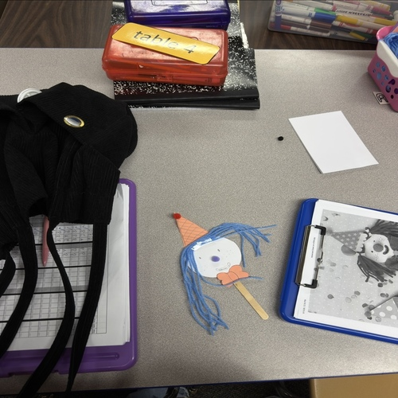
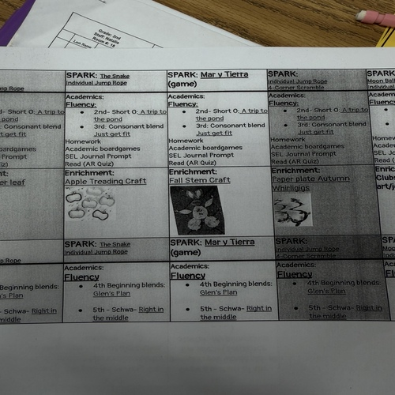

Natalie Rodriguez
I am currently an undergraduate student at the University of California, Riverside, majoring in Psychology. As a first-generation student, pursuing higher education has been an important part of my personal and academic journey. Before transferring to UCR, I attended Riverside City College, where I developed a strong foundation in psychology and discovered how much I enjoy learning about human behvaior, emotions, and development. My experiences as a student have taught me the importance of perseverance, adaptability, and taking advantange of opportunities for personal growth. Studying psychology has allowed me to better understand how individuals think, feel, and respond to different situations. I am especially intreseted in child development, emotional well-being, and the ways supportive environments can positively influence people's lives. My ultimate career goal is to become a Certified Child Life Specialist, where I hope to combine my education, compassion, and communication skills to support children and families navigating challenging medical experiences.
Throught my educational journey, I have developed valuable interpersonal, leadership, and communication skills through my experiences working with children and supporting their development. I currently work as a Youth Development Specialist at an elemantary school, where I have the opportunity to work directly with children and contribute to an encouraging, supportive, and engaging environment. My role has strengthened my ability to communicate with children of different ages, understand their individual needs, and approach situations with patience, empthy, and adaptability. Working in a elementary school has also allowed me to recongnize the importance of creating a safe and welcoming space where children feel comfortable expressing themselves, building confidence, and developing social skills.
Looking toward the future, I'm passionate about pursuing a career as a Child Life Specialist because I want to make a meaningful difference in the lives of children experiencing hospitalization, illness, or other stressful medical environments can be overwhelming, especially for young children who may have difficulty understanding what is happening around them. My goal is to help children feel safe, supported, and empowered through developmentally appropriate activities, therapeutic play, education, and emotional reassurance. I also hope to support parents and caregivers by helping families navigate difficult experiences with greater confidence and understanding. As I continue my education at UC Riverisde, I plan to seek opportunties involving children, healthcare environments, volunteering, and professional mentorship. I hope to gain hands-on experience that will strengthen my understanding of child development and prepare me for the additional training required in the child life profession.
Experience
Youth Devlopment Specialist
• Support elementary school students in a safe, positive, and engaging learning environment.
• Assist students with educational activities, homework, and personal development.
• Help students develop confidence, independence, and problem-solving skills.
Habitat For Humanity
• Participate in a student organization focused on community service and helping others.
• Develop teamwork, leadership, and communication skills through club involvment.
Avid Tutor
• Assisted Students with academic assignments and understanding challenging subjects.
• Provided peer tutoring and academic support.
• Developed leadership, communication, and mentoring skills.
Education
UC Riverside
Riverside City College
Portfolio
.jpeg)
.jpeg)



